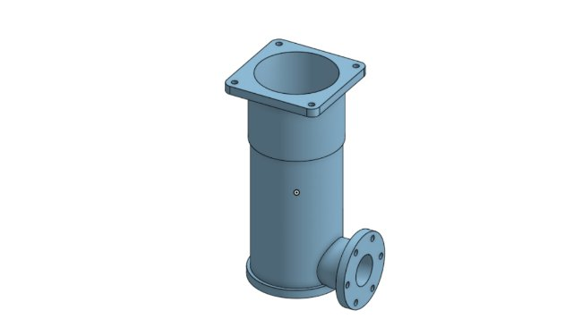
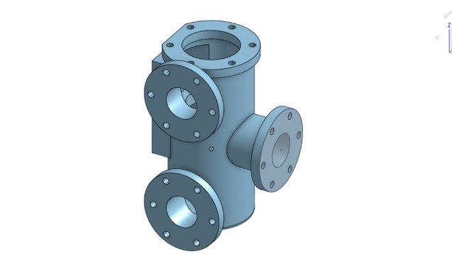
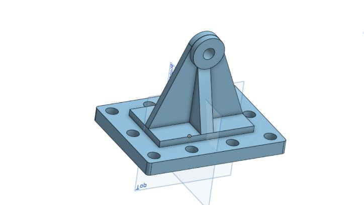
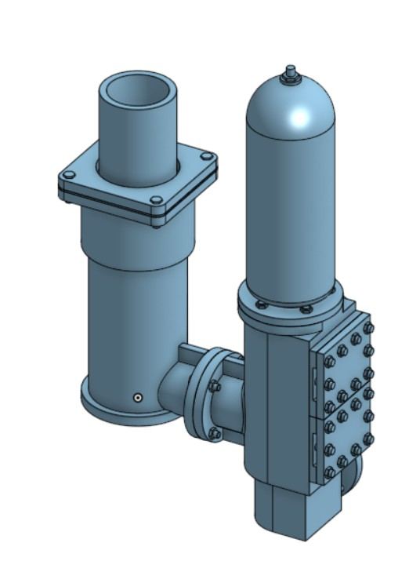
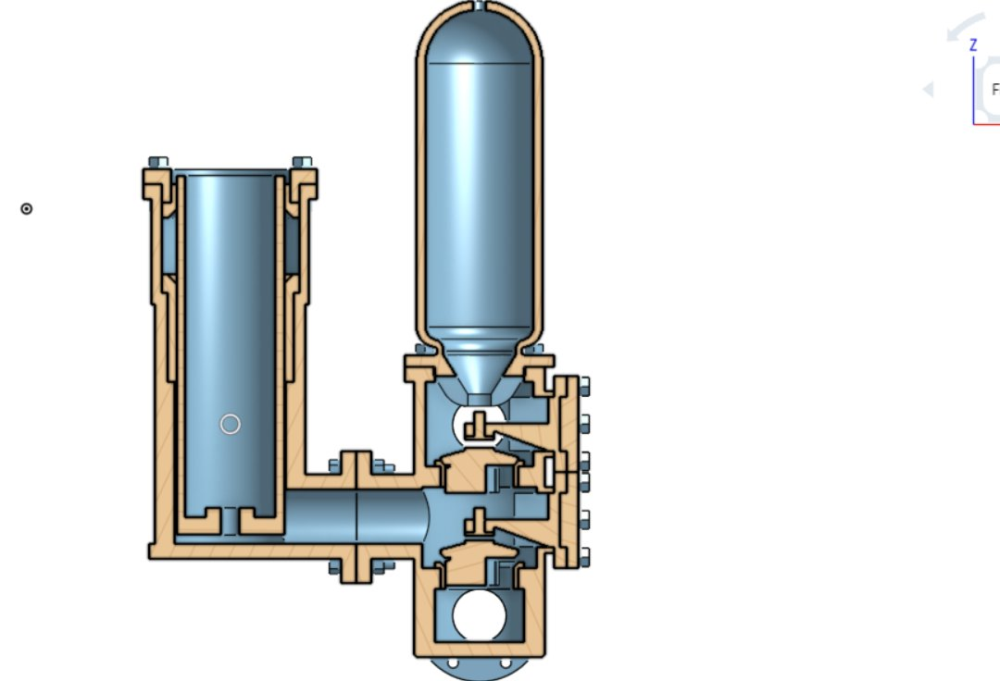
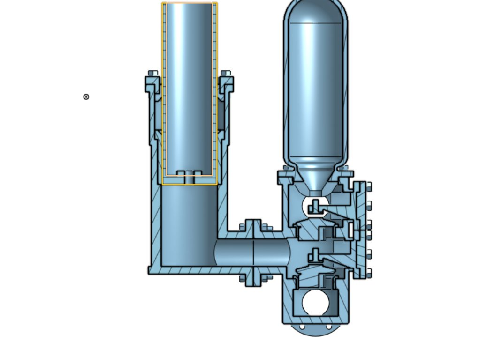
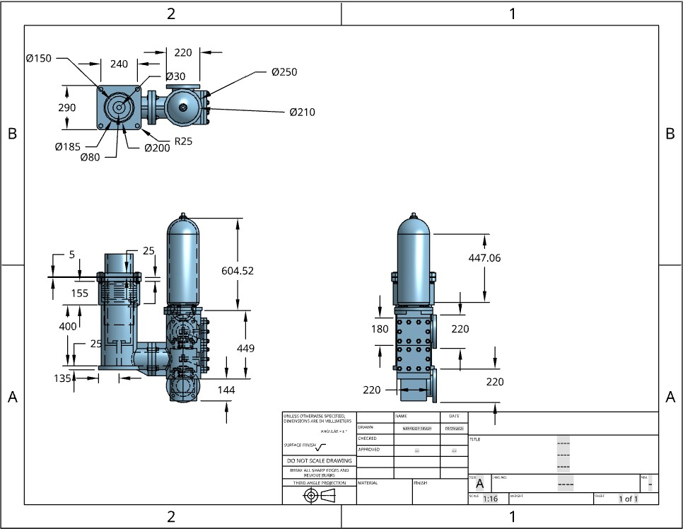

Projekte / P.07 · Fallstudie
Kolben-Speisepumpe
Siebzehn Bauteile aus flachen Ansichten modelliert und zu einer Baugruppe verbunden, die sich bewegt wie das Original. Fünf davon standen nicht in der Aufgabe — sie mussten aus der Geometrie der übrigen Teile herausgelesen werden.
- Kontext
- CAD-Praktikum — B.Eng. Mechanical Engineering, Thapar Institute
- Aufgabe
- Eine Kolben-Speisepumpe aus den vorgegebenen 2-D-Bauteilansichten aufbauen und anschließend so verknüpfen, dass die richtigen Freiheitsgrade erhalten bleiben.
- Werkzeug
- Onshape — Bauteile, Baugruppe, Zeichnungen
- Umfang
- 12 vorgegebene Teile · 5 abgeleitete · eine verknüpfte Baugruppe
Zwölf Teile aus flachen Ansichten
Eine Speisepumpe hebt den Druck des Kesselspeisewassers so weit an, dass es gegen den eigenen Dampf in den Kessel gelangt. Die Kolbenbauart nimmt man bei kleinen Fördermengen: Ein Plunger verdrängt pro Hub ein festes Volumen, zwei Rückschlagventile sorgen dafür, dass es nur in eine Richtung geht, und ein Windkessel auf der Druckseite dämpft die Pulsation, die ein einzelner Plunger sonst in die Leitung schicken würde.
Vorgegeben waren 2-D-Ansichten von zwölf Teilen — Zylinderkörper, Plunger, Zylinderbuchse, Deckelbuchse, Zylinderdeckel, Kastendeckel, Ventilkasten, Ventilsitz, Ventil, Windkessel, Konsole und Schraube. Jedes musste aus den Ansichten gelesen und als Volumenkörper neu aufgebaut werden.



Die fünf, die nicht in der Aufgabe standen
Der vorgegebene Satz schloss nicht. Baut man die zwölf zusammen, bleibt eine Stopfbuchse ohne Inhalt und Flansche ohne etwas, das sie zusammenhält — eine Stopfbuchspackung, zwei Schraubengrößen, eine Mutter und eine Scheibe werden gebraucht, und keines davon war gezeichnet. Ihre Maße kamen aus dem, wozu sie passen mussten: Schraubendurchmesser aus den bereits modellierten Flanschlochbildern, die Stopfbuchse aus der Bohrung, die sie abdichtet, und aus der Tiefe, die zwischen Deckel und Zylinder übrig bleibt.
Die Baugruppe und die Bewegung, die sie zulassen muss
Eine Baugruppe zu verknüpfen heißt zu entscheiden, was sich weiterhin bewegen darf. Hier gleitet der Plunger im Zylinderkörper, die Ventile heben von ihren Sitzen ab und fallen zurück, und die Schrauben drehen sich. Alles andere ist fest. Genau das unterscheidet eine Baugruppe von einem Haufen Volumenkörper mit gemeinsamem Koordinatensystem.




Was ich anders machen würde
- Der Plungersitz ist Nennmaß auf Nennmaß modelliert. Körper an Körper, null Spiel — ausgerechnet der eine Sitz in der Pumpe, der nicht null sein darf. Ein Plunger braucht Laufspiel und eine gepackte Stopfbuchse; so eng modelliert würde er fressen, zu locker würde er lecken. Die Geometrie stimmt, die Ingenieurleistung daran fehlt.
- Fünf abgeleitete Teile sind fünf Annahmen. Besonders die Stopfbuchse ist eine mögliche Lesart des Bauraums. Packungstiefe und Brillenweg sind durch die Anschlussflächen nicht festgelegt, eine andere Tiefe würde die Baugruppe genauso schließen und anders packen. Ich hätte festhalten sollen, welche Maße getrieben und welche gewählt waren.
- Nichts wurde durchfahren. Die Verknüpfungen zeigen, dass der Plunger gleiten kann und die Ventile abheben können, aber keine Bewegungsstudie fährt sie über einen vollen Hub. Eine Kollision, die erst auf halbem Weg auftritt, wäre nicht aufgefallen.
- Keine Werkstoffe, also keine Betriebsdaten. Ohne Dichten hat die Baugruppe keine Masse, und ohne Masse gibt es nichts, wogegen sich ein Antrieb prüfen ließe — kein Hubvolumen, keine Fördermenge, keine Vorstellung vom nötigen Drehmoment. Genau diese Lücke musste das Antriebsprojekt danach füllen.